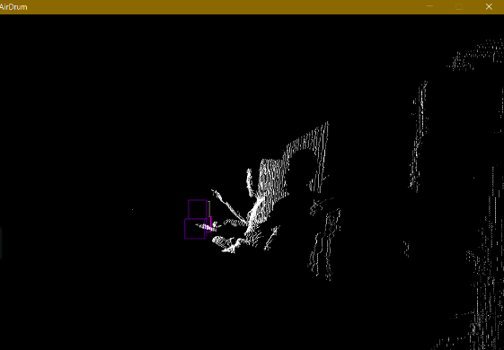
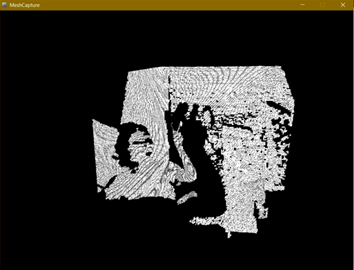

Themes
Black (default) -
White -
League -
Sky -
Beige -
Simple
Serif -
Blood -
Night -
Moon -
Solarized
RAY-TRACING
Created by Daniel Chala / David Herrera
INDEX
INTRODUCTION
RAY-TRACING - DEFINITION
Ray-tracing is a image rendering technique that consists of taking a Point of View and launching rays onto an object that is inside of a grid so you can recreate raster-image of this object inside the grid.
RAY-TRACING - DEFINITION

OVERVIEW
- Ray-tracing is image-centric since the outer loop iterates over all the pixels on the scene.
- It is used to solve the visibility problem.
- Ray-tracing is better than Rastrerization for Shading, but is worst for Visualization.
OVERVIEW

RAY-TRACING PSUDOCODE
>RAY-TRACING PSUDOCODE
SHADING
>WHY IS SHADING BETTER FOR SHADING?
- Shading is used to create effects like shadows, soft shadows when area lights are used, and more generally global illumunation effects such as reflection, refraction, indirect reflections and indirect diffuse.
- Ray-tracing is good at both solving the visibility problem and finding the visibility between surfaces.
- The shading process requires finding the visibility between surfaces.
SO... WHY DO GPUs USE RASTRERIZATION OVER RAY TRACING?

CREATE AN IMAGE IN RAY-TRACING
- Cast a ray for each pixel in the image.
- The first rays emitted are called primary rays or camera rays.
- More rays can be spawned from primary rays. These other rays are called secondary rays.
- When a primary ray is cast into the scene, the next step is to find if it intersects any object in the scene.
- When primary rays are used to solve the visibility problem, we can use the term ray-casting.
HOW DOES SHADING WORK ON RAY-TRACING?
There are 2 main types of rays, Primary rays and secondary rays, Secondary rays can be Shadow Rays or reflection rays depending on their function.

RECURSIVITY IN RAY-TRACING
>RECURSIVITY IN RAY-TRACING
- Each time a ray intersects a transparent surface, two new rays are generated (a reflection and a refraction ray).
- If these rays intersect another transparent object, each ray will generate two more rays.
- This practically means that render time also increases exponentially as the depth increases.
- The simplest solution to the recursive nature of this algorithm and the fact that the number of secondary rays grows exponentially as the depth increases, is to put a cap on the maximum number of allowed recursions (or maximum depth).
RECURSIVITY IN RAY-TRACING

TESTING FOR RAY-GEOMETRIC INTERSECTIONS
TESTING FOR RAY-GEOMETRIC INTERSECTIONS
Testing if a ray intersects any object in the scene requires to loop over all the objects in the scene and test the current object against the ray.
GEOMETRY IN 3D
- Simple shapes: Can be defined mathematically, or parametrically.
- Shapes of more complex objects: Can only be described using polygon meshes, subdivisions surfaces or NURBS surfaces (or something equivalent).
COMPLEX SHAPES
Convert each geometry type into the same internal representation, which in almost 99% of the cases, is going to be a triangulated polygon mesh.
WHITTED RAY-TRACING
WHITTED RAY-TRACING
It’s one of the most classical examples of light transport algorithm based on ray-tracing.
WHITTED RAY-TRACING
If an object A is a mirror like surface, and that an object B seats on top of it, then we would like to see the reflection of B into A.
If A is not a flat surface, there is no easy solution for computing this reflection.
Things get even harder if B is also reflective. Mirror surfaces keep reflecting images of themselves causing the "infinity room" effect.
WHITTED RAY-TRACING

WHITTED RAY-TRACING
The refraction direction can be computed using Snell's law and depends on the surface orientation (the surface's normal), the incoming light direction and the material refractive index (around 1.3 for water and 1.5 for glass).
WHITTED RAY-TRACING
Whitted proposed to use these laws to compute the reflection and refraction direction of rays as they intersect reflective or transparent surfaces, and follow the path of these rays to find out the color of the object they would intersect.
SNELL'S LAW
Three cases:
- If the surface at the intersection point is opaque and diffuse, use the Phong model, to compute the color of the object at the intersection point.
- If the surface is a mirror like surface, trace another reflection ray at the intersection point.
- if the surface is a transparent surface, cast another reflection and a refraction ray at the intersection point.
WHITTED RAY-TRACING

MONTE CARLO METHOD
MONTE CARLO METHOD
Path tracing, occasionally referred to as Monte Carlo ray tracing, renders a 3D scene by randomly tracing samples of possible light paths. Repeated sampling of any given pixel will eventually cause the average of the samples to converge on the correct solution of the rendering equation, making it one of the most physically accurate 3D graphics rendering methods in existence.
REFERENCES
Slide Backgrounds
Set data-background="#dddddd" on a slide to change the background color. All CSS color formats are supported.
Image Backgrounds
<section data-background="image.png">Tiled Backgrounds
<section data-background="image.png" data-background-repeat="repeat" data-background-size="100px">Video Backgrounds
<section data-background-video="video.mp4,video.webm">